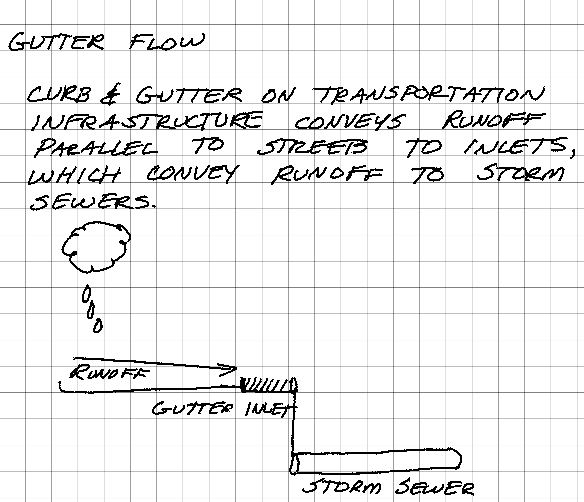
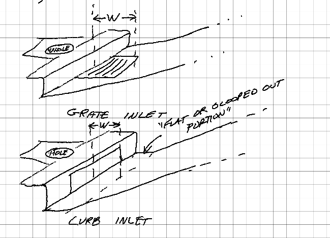
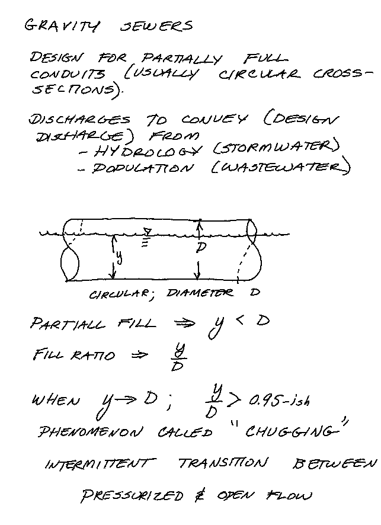
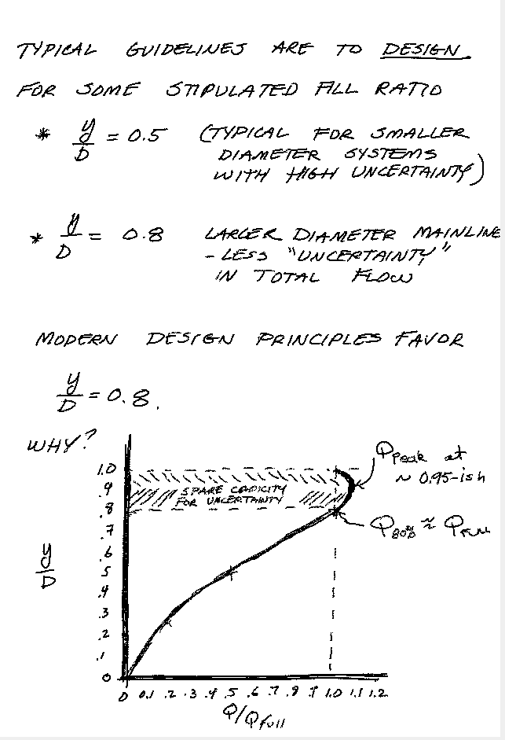
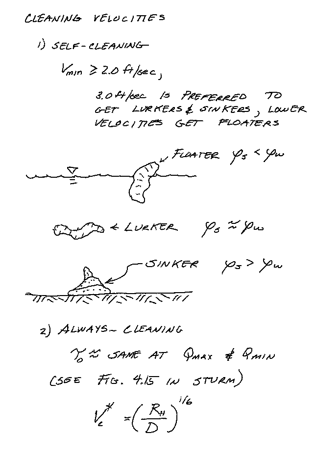
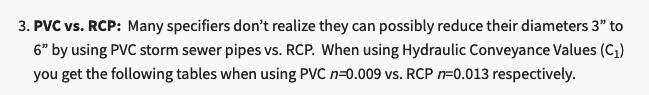
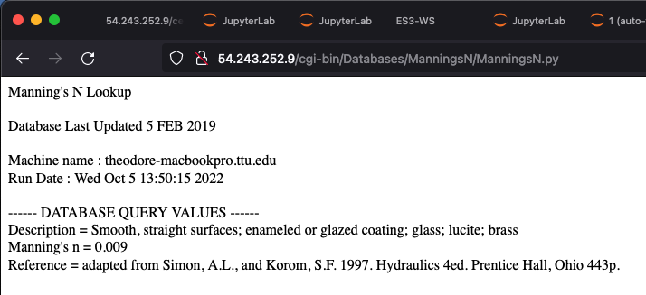
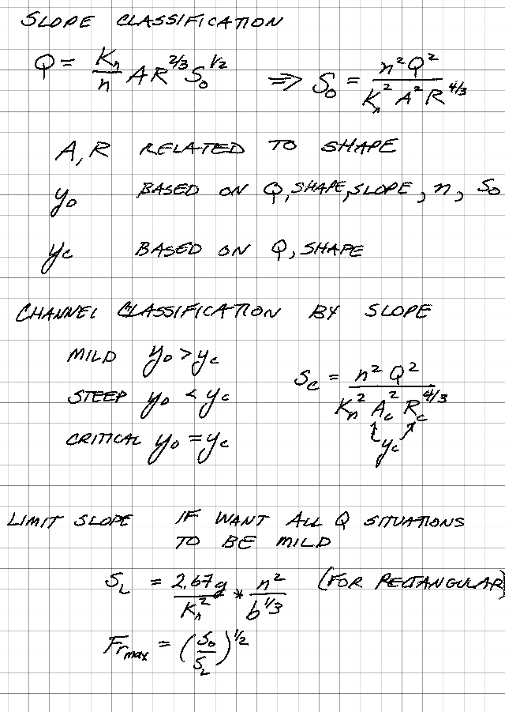

Gutter Flow and Gravity Sewer Design¶
Curb and gutters on transportation infrastructure (streets, bridges, highways, …) conveys runoff parallel to the travel paths to inlets, which collect the flow and convey it to storm sewer systems (or ditches)

Pavement Drainage (Texas Hydraulics Manual 2019)
Inlets¶

Inlet (Texas Hydraulics Manual 2019)
Gutter and Inlet Equations (Texas Hydraulics Manual 2019)
Inlets of various types to collect stormwater and deliver to drainage infrastructure Cleveland, T.G. (2020) Water Systems Design (Storm Sewers, Inlets, and Conduits) to accompany CE-3372, Department of Civil, Environmental, and Construction Engineering, Whitacre College of Engineering.
Tools(Spreadsheets)¶
The spreadsheets below implement the inlet equations described in Gutter and Inlet Equations (Texas Hydraulics Manual 2019).
The spreadhseets should work as-is in Excel 2014 and older, you may have to jack with them a bit in newer Excel. They work fine in LibreOffice.
Gravity Sewers¶



Conduit Design Procedure (Taxes Hydraulics Manual 2019)
Example 4.6¶
Find the discharge capacity of a 24-inch diameter PVC storm sewer flowing at 80% fill ratio, if the sewer slope is 0.003.
Solution¶
Use techniques in textbook, or as alternative the following.
 or

Now just reuse code
# prototype functions
def area(theta,diameter):
import math
area=(1/8)*(theta-math.sin(theta))*diameter**2
return(area)
def topw(theta,diameter):
import math
topw=diameter*math.sin(theta/2)
return(topw)
def perimeter(theta,diameter):
perimeter = diameter*theta/2
return(perimeter)
def angle(depth,diameter):
import math
angle=2*math.acos(1-2*depth/diameter)
return(angle)
def Qman(Kn,n,A,R,S):
Qman=(Kn/n)*(A)*(R**(2/3))*(S**(1/2))
return(Qman)
# Our problem
n = 0.009 # https://www.conteches.com/pipe-article/article/7/hydraulics-for-gravity-sewer-pipe-a-few-things-to-consider
diameter = 24 #inches
D = diameter/12 #inches to feets
fillratio = 80 # percent
y = D*fillratio/100 #y in feets (unit conversions embedded in formula)
#print(round(y/D,3)) # check work, suppress for the money shot
slope = 0.003
theta = angle(y,D)
A = area(theta,D)
P = perimeter(theta,D)
R = A/P
Qcap = Qman(1.49,n,A,R,slope)
print('Estimated Discharge',round(Qcap,2),' CFS')
Estimated Discharge 17.54 CFS
Compare our answer of 17.54 CFS, to the book result of 17.5 CFS. In this case the same, but textbook used a more rigorous approach involving friction factors. Typically one would expect similar results in most applications - using the mighty internet, defendible Manning’s n values are practically unlimited.
Example 4.7¶
Find the concrete sewer (n=0.015) diameter required to carry a maximum discharge of 10.0 CFS on a slope of 0.003. Minimum discharge is anticipated to be 2.5 cfs. Check for self-cleansing critical velocity adherence.
Solution¶
Use \(\frac{y}{D} = 0.8\) as design fill ratio.
Guess a diameter (use the code above) and increment diameter until can get the design discharge. Round up to nearest commercial diameter.
# prototype functions
def area(theta,diameter):
import math
area=(1/8)*(theta-math.sin(theta))*diameter**2
return(area)
def topw(theta,diameter):
import math
topw=diameter*math.sin(theta/2)
return(topw)
def perimeter(theta,diameter):
perimeter = diameter*theta/2
return(perimeter)
def angle(depth,diameter):
import math
angle=2*math.acos(1-2*depth/diameter)
return(angle)
def Qman(Kn,n,A,R,S):
Qman=(Kn/n)*(A)*(R**(2/3))*(S**(1/2))
return(Qman)
# Our problem
n = 0.015 # https://www.conteches.com/pipe-article/article/7/hydraulics-for-gravity-sewer-pipe-a-few-things-to-consider
diameter = 23.545 #inches <<< Guess this value
D = diameter/12 #inches to feets
fillratio = 80 # percent
y = D*fillratio/100 #y in feets (unit conversions embedded in formula)
#print(round(y/D,3)) # check work, suppress for the money shot
slope = 0.003
theta = angle(y,D)
A = area(theta,D)
P = perimeter(theta,D)
R = A/P
Qcap = Qman(1.49,n,A,R,slope)
print('Estimated Discharge',round(Qcap,2),' CFS')
Estimated Discharge 10.0 CFS
23.545 inches, nearest commerical is 24-inch, so specify that value.
Now compute y for 10 CFS and 2.5 CFS in this pipe
# 10CFS
n = 0.015 # https://www.conteches.com/pipe-article/article/7/hydraulics-for-gravity-sewer-pipe-a-few-things-to-consider
diameter = 24 #inches
depth = 18.29 #inches <<< Guess this value
y=depth/12
D = diameter/12 #inches to feets
fillratio = 80 # percent
#y = D*fillratio/100 #y in feets (unit conversions embedded in formula)
#print(round(y/D,3)) # check work, suppress for the money shot
slope = 0.003
theta = angle(y,D)
A = area(theta,D)
P = perimeter(theta,D)
R = A/P
Qcap = Qman(1.49,n,A,R,slope)
print('Estimated Discharge',round(Qcap,2),' CFS')
print('Hydraulic Radius',round(R,3))
Vcrit = (R/D)**(1/6)
print('Critical Velocity',round(Vcrit,3))
print('Section Velocity',round(Qcap/A,3))
Estimated Discharge 10.0 CFS
Hydraulic Radius 0.605
Critical Velocity 0.819
Section Velocity 3.893
# 2.5CFS
n = 0.015 # https://www.conteches.com/pipe-article/article/7/hydraulics-for-gravity-sewer-pipe-a-few-things-to-consider
diameter = 24 #inches
depth = 7.87 #inches <<< Guess this value
y = depth/12
D = diameter/12 #inches to feets
fillratio = 80 # percent
#y = D*fillratio/100 #y in feets (unit conversions embedded in formula)
#print(round(y/D,3)) # check work, suppress for the money shot
slope = 0.003
theta = angle(y,D)
A = area(theta,D)
P = perimeter(theta,D)
R = A/P
Qcap = Qman(1.49,n,A,R,slope)
print('Estimated Discharge',round(Qcap,2),' CFS')
print('Hydraulic Radius',round(R,3))
Vcrit = (R/D)**(1/6)
print('Critical Velocity',round(Vcrit,3))
print('Section Velocity',round(Qcap/A,3))
Estimated Discharge 2.5 CFS
Hydraulic Radius 0.368
Critical Velocity 0.754
Section Velocity 2.791
Now check the critical cleansing velocities, at the two discharges the section velocity is larger than the critical velocity, so these sewers should have acceptable self-cleansing properties.
Slope Classification¶
